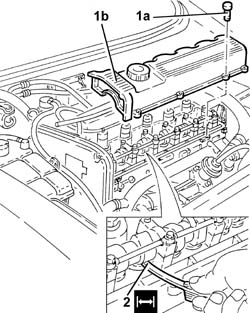
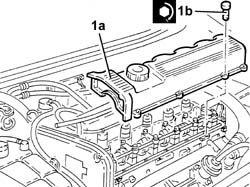

1036H14 valve tappets - check clearance
- Path
- Procedures > 10 ENGINE > 1036 TIMING SYSTEM > 1036H tappets and rocker shafts > 1036H14 valve tappets - check clearance
- Kind
- repair procedure (removal / refitting; the operation number is the code)
- Applies to
- engines: 1.9 JTD 8v , 2.4 JTD 10v; all production periods
- Interactive page
- https://sloeber94.github.io/elrnDB-a156/en/#/3237775
Applies to: engines: 1.9 JTD 8v , 2.4 JTD 10v; all production periods
 Dismantling
Dismantling
 Reassembling
ReassemblingPosition the vehicle on the ramp.
4450B10 Front WHEEL (one) - R.R. (left).
7055B42 Additional FRONT WHEEL ARCH (one), left or right - R.R. (right)
1. Undo the bolts (1a) and remove the tappet cover (1b).
Act on the drive pulley bolt using a suitable spanner so that the valves are in the closed position.
2. With the engine cold, check, using a feeler gauge, that with the valves in a closed position the clearance is within the recommended values.
 | Measurement | Value | |
|---|---|---|---|
2 | Clearance (mm) | 0.25 - 0.35 |
| Measurement | Value | |
|---|---|---|---|
2 | Clearance (mm) | 0.30 - 0.40 |

Applies to: engines: 1.9 JTD 8v , 2.4 JTD 10v; all production periods
Reassembling
Dismantling1. Fit the tappet cover (1a) and fix it tightening the bolts (1b) to the recommended torque.
 | Fastening | Component | Ø | Value (daNm) |
|---|---|---|---|---|
1b | Bolt | CAM COVER | M6 | 0.8 ÷ 1.0 |

Applies to: engines: 1.9 JTD 8v , 2.4 JTD 10v; all production periods
7055B42 Additional FRONT WHEEL ARCH (one), left or right - R.R. (right)
4450B10 Front WHEEL (one) - R.R. (left).
Remove the car from the ramp.